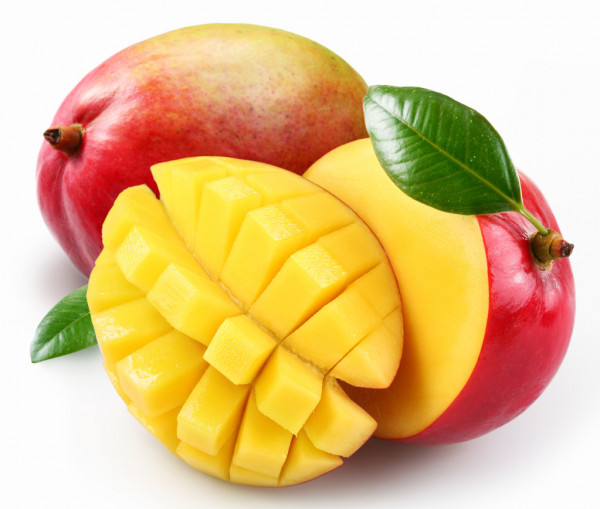
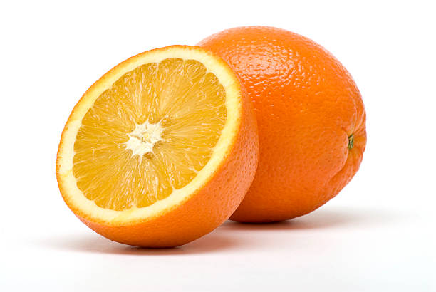

Mangoes are sweet, tropical stone fruits from the Mangifera indica tree, native to South Asia, known as the "king of fruits" for their juicy, vibrant flesh, rich in vitamins, and unique sweet-tart flavor, with a large central pit, related to cashews and pistachios. They're eaten fresh, in desserts, or chutneys, and vary greatly in size, shape, color (green, red, yellow), and taste, with varieties like Alphonso being famous.

Watermelon (Citrullus lanatus) is a large, sweet, juicy fruit from the gourd family, prized for hydration and nutrients like vitamins A, C, potassium, and antioxidants (lycopene), and is over 90% water. Originating in Africa, it's grown globally, eaten raw, juiced, or pickled, with seedless varieties common alongside traditional seeded types, and its rind is also edible when cooked. Watermelons offer health benefits like supporting blood pressure and immunity, and can even come in shapes like cubes or hearts due to innovative farming.

Oranges are popular, round citrus fruits known for their juicy, sweet-tart flesh, bright orange peel, and abundant Vitamin C, originating in Southeast Asia and now grown globally for fresh eating, juice, and flavoring. Rich in antioxidants, fiber, potassium, and water, they support immunity, hydration, skin health, and help prevent kidney stones, with types including Navel (easy to peel) and Blood Oranges (red flesh). They're consumed whole, juiced, zested, or made into marmalade, and their peel adds flavor to dishes and teas.